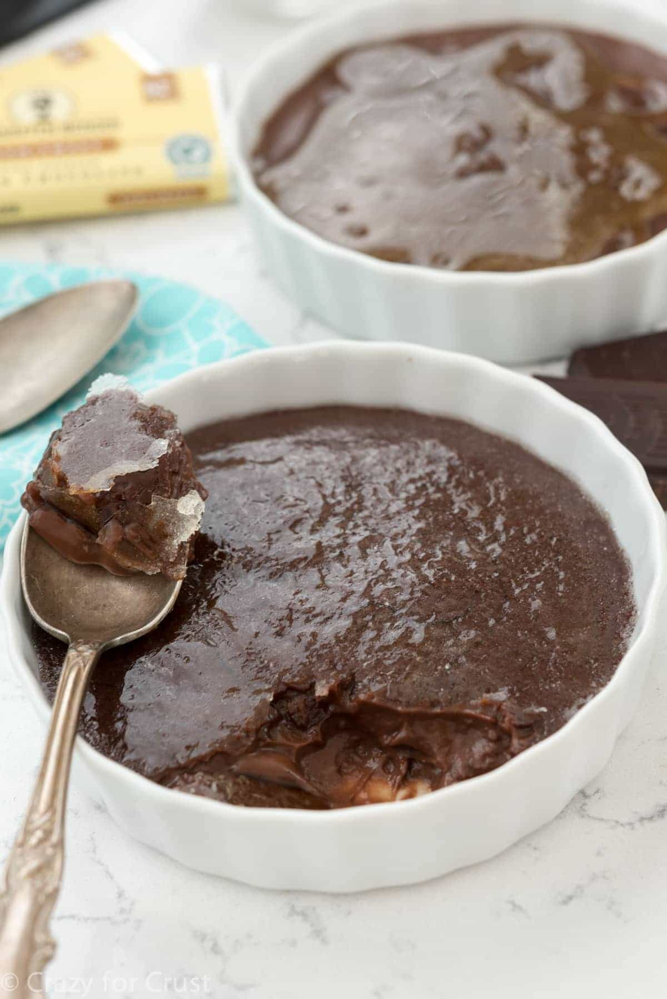

| 
Original recipe page
|
Ingredients
- 1/3 cup granulated sugar
- 1/8 teaspoon salt
- 5 teaspoons unsweetened cocoa powder I used Scharrfen Berger 100% Cacao Unsweetened Natural Cocoa Powder
- 4 teaspoons cornstarch
- 1 teaspoon vanilla bean paste or extract
- 1 ounce semi-sweet baking chocolate I used a 1 oz Scharrfen Berger 62% Cacao Semisweet Chocolate bar
- Granulated sugar for topping
Instructions
- Whisk sugar, salt, cocoa, and cornstarch in a medium saucepan. Add milk and whisk over medium low heat until the powder is dissolved. Switch to a wooden spoon or heat safe spatula and stir continuously until the mixture starts to thicken. Once it thickens, stir in the vanilla bean paste then remove the pan from the heat and stir in the baking chocolate. Stir until smooth. Pour into 2-4 ramekins or creme brûlée dishes. (Depending on the size of the dish. Dishes shown are 6 oz.)
- Let the pudding cool to room temperature. You can brulee it now and serve immediately, or cover and chill for up to 24 hours before continuing.
- To make the brûlée topping, you can use a torch or the stovetop method. Do this right before serving.
- To brûlée using a torch: top each creme brûlée with about 2-3 teaspoons granulated sugar. Evenly toast the sugar until it bubbles, then turns translucent, being careful not to burn it.
- To brûlée using the stovetop method: add 1/4 cup granulated sugar to a small saucepan. Place over low heat and do not touch it, but watch it closely. Once it starts to turn to liquid, stir with a wooden spoon, being careful not to get it on the sides of the pan, until the sugar turns to crystals then to liquid again, and turns a light amber color. Drizzle some onto each chocolate creme brulee. Note: this sugar hardens more than it does with the torch. Err on the light side of adding it to the top - you don’t need the entire amount for the 2 brûlées but it’s hard to make less than 1/4 cup - and be cautious eating it.
|